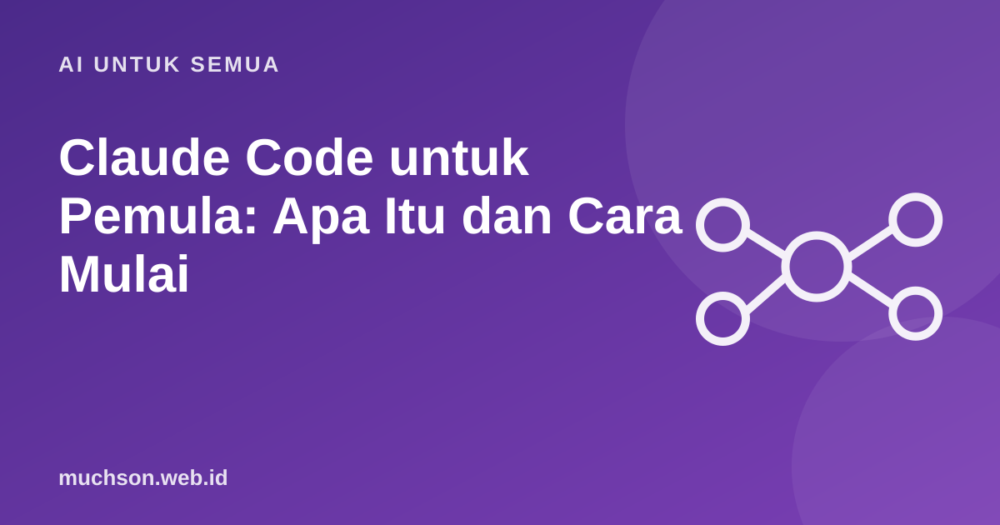

Beranda › Artikel › AI untuk Semua
AI untuk SemuaClaude Code untuk Pemula: Apa Itu dan Cara Mulai
Berbeda dengan chatbot yang hanya memberi saran, agen coding seperti Claude Code bekerja langsung di proyek Anda: membaca file, mengubah kode, menjalankan perintah, lalu melaporkan hasilnya. Kekuatan besar, sehingga kebiasaan kerjanya menentukan segalanya.

Apa bedanya dengan chatbot biasa?
Alur kerja yang aman
Contoh tugas yang baik dan yang buruk
Batasan yang perlu diingat
- Agen bisa salah memahami maksud atau membuat perubahan di luar permintaan. Tinjau semuanya.
- Hasilnya sebaik konteks dan tes yang tersedia. Proyek tanpa tes lebih berisiko.
- Keamanan tetap tanggung jawab Anda: validasi input, kelola rahasia, tinjau dependensi.
- Fitur dan perintah berubah. Rujuk dokumentasi resmi Anthropic untuk instalasi dan penggunaan terbaru.
Saran memulai
Mulailah di proyek kecil yang tidak kritis. Biasakan membaca diff dan menjalankan tes sebelum memercayai agen pada pekerjaan yang lebih penting.
Tanya jawab
Apakah Claude Code gratis?
Ketersediaan dan biaya bergantung pada paket dan penggunaan. Periksa halaman resmi Anthropic untuk informasi terbaru.
Apakah saya perlu bisa coding?
Pemahaman dasar sangat membantu untuk menilai hasil. Tanpa itu, risiko menerima kode yang salah atau tidak aman meningkat.
Apakah aman memberi agen akses ke proyek saya?
Aman bila izinnya dibatasi, ada Git, dan Anda meninjau perubahan. Jangan menyimpan rahasia di tempat yang tidak perlu dapat dibaca.